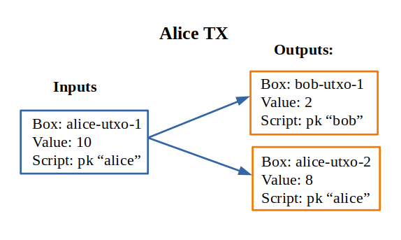
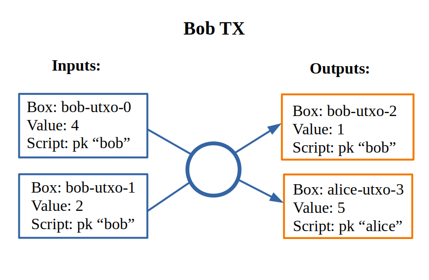

Quick start guide for language¶
The language for smart contracts is heavily insired with ErgoScript and Haskell. So regarding the syntax we can use our haskell intuition in many circumstances.
Functions look like Haskell functions, but we use strict execution. They are applied with space defined with equal sign
or slash-lambda. Like in haskell we have if-then-else and let-in expressions.:
> addTwo x = x + 2
> addTwo 2
4
Like in Haskell we have tuples. They are accessed with case-expressions:
getThird (_, _, third) = third
case pair of
(a, b) -> a + b
Also we have lists with usual operators map (map over), fold (left fold), length (size of the vector),
++ (concatenation) and many other handy functions.
the script is a list of defenitions. It should contain
the function with name main which has type SigmaBool. It is the result of the script.:
one = 1
two = 2
check x = one + two == x
main = toSigma (check 3)
The SigmaBool is a special type that uses Sigma-protocols as proof of the ownership.
Soon we are going to see some examples of them. In this script we use converter functions
toSigma :: Bool -> SigmaBool. It converts plain old booleans to sigma-expressions.
No recursion
The termination of execution should be guaranteed for our language. So the recursive functions are not allowed.
Ownership check - the heart of the language¶
The heart of the language is a function pk that checks for ownership:
-
pk :: Bytes -> SigmaBool Check for ownership of private key.
It implements sigma-protocol. The transaction should have the field proof
that lists all proofs for ownership of the keys.
Here is the simple script to protect Bob’s values:
pk (bytes "bob-key")
In this line bob-key is a public key of the user. We convert text representation to bytestring
with built-in function bytes. It protects the funds
from spending by other parties. But where do we get our keys?
We get public key from secret key.
-
bytes :: Text -> Bytes Special built-in word that let us write bytestring as plain text.
Secret and public keys¶
We can create the secret and public keys in two ways. One involves knowledge
of Haskell and another is lanuage agnostic.
To create new secret key in Haskell we can use the function newSecret from the package
hschain-utxo-lang and then we can get the public key out of secret with
function getPublicKey :: Secret -> PublicKey.
Also we can create secret key with utility hschain-utxo-compiler and it’s command secret.
We can use it like this:
> hschain-utxo-compiler secret --output bob-secret.txt
It creates new secret key and dumps it to the file bob-secret.txt.
Then we can get the public key with command public-key:
> hschain-utxo-compiler secret --input bob-secret.txt --output bob-public-key.txt
It transforms secret key to public. If we ommit the option output it will dump public key
to stdout. This string we can use as the argument of the function pk to protect our funds.
If we want to receive funds from another user we can give public key to her so that she can submit transaction with the script:
pk (bytes "our-public-key")
Conditional ownershhip¶
Also we can give money to Alice until certain time and later give it to Bob excluding Alice:
time = 100
main =
(pk alice &&* (getHeight <=* time)
|| (pk bob &&* (getHeight >* time)
Operators with stars at the end like &&* or <* are lifted versions of
ordinary boolean operators to work with SigmaBool instead of Bool.
For example let’s look at the signatures:
(&&*) :: SigmaBool -> SigmaBool -> SigmaBool
(<*) :: a -> a -> SigmaBool
(==*) :: a -> a -> SigmaBool
We can find out the signature in hschain-utxo-repl just like in ghci repl with command :type or :t for short:
:t (<=*)
(<=*) :: a -> a -> SigmaBool
Comparision operators are defined for all types (including user-types). Derivation of comparision operators is built in the language.
Transaction execution¶
Let’s look at how transaction is executed. Transaction has several components:
- Inputs
List of identifiers for exisiting UTXOs in the blockchain with metadata on how to prove the ownership of the input/
- Outputs
List of produced UTXOs. They are added to blockchain if TX is valid. The input boxes are destroyed.
- Data-inputs
List of identifiers for existing UTXOs that are used as global scope constants for execution of the transaction. They are not destroyed after TX-execution and values of them can not be spent to outputs. This is the main difference between inputs and data-inputs.
Inputs contain useful information for TX-execution:
- Identifier of the input box
Reference to box that we want to spend. Identifier of the box in the blockchain. Note that we can sign TX with reference to the box that is not yet present in the block chain and sign it. This scenario can be useful in the omplementation of lightning networks.
- Arguments
Arguments for box script. It is represented as bytestring that can hold any serialised value of the language (including user types). Serialisation is built-in the language for all types.
- Proof
Signed sigma-expression that proofs the ownership.
- Signaiures
Vector of signatures. This is used with bitcoin-style signatures.
- Signature mask
Mask of which inputs and outputs are signed. We can sign all inputs and outputs but also we can leave some iputs or outputs open for change.
User posts transaction in three steps.
User creates transaction with empty proof and calls API method
api/tx-sigma/get. This method produces sigma-expression that is the result of evaluation of transaction in the current state of block-chain.User creates a proof of ownership if she can for received sigma-expression.
User uses this proof with transaction and post it again but with method
api/tx/post. If everything is ok, verifier checks the transaction and accepts it.
The engine reads all inputs from the blockchain and creates the total script for transaction by and-concatination of all scripts in inputs. If all input scripts are valid in the current context of transaction and blockchain then transaction is valid and we destroy input UTXOs and add output UTXOs to the blockchain.
Beside the check of proof there are other conditions:
The sum of inputs should equal to the sum of outputs.
- Outputs should contain valid scripts, that are evaluated to
SigmaBool. They have function main with no arguments that produces
SigmaBool.
- Outputs should contain valid scripts, that are evaluated to
In the following sections we are going to look at several examples.
Simple money exchange script¶
Let’s look at the very simple scenario. Alice gives 2 coins to Bob. And Bob gives 5 to Alice. Let’s see how it can be implemented.
{kind=link}
Suppose that Alice has UTXO with 10 coins named alice-utxo-1 that is protected by the script:
pk alice
To send 2 coins to Bob she creates a TX that includes her UTXO as input, provides proof of her ownership and creates two UTXOs. The first UTXO gives money to Bob. It has 2 coins of value and contains script:
pk bob
The second UTXOs is cashback for Alice, she gives change of 8 coins to herself:
pk alice
In the UTXO model we have to spend all values of the inputs, because inputs would be destroyed after TX confirmation. So we have TX such as:
{
"inputs":
[ { "id": "alice-utxo-1"
, "args": {}
, "proof": signed-sigma-expression
, "sigs": []
, "sigMask": {"SigAll": []}
}
],
"outputs":
[ { "id": "bob-utxo-1",
, "value": 2,
, "script": "pk (bytes bob-pub-key)",
, "args": {}
}
, { "id": "alice-utxo-2",
, "value": 8,
, "script": "pk (bytes alice-pub-key)",
, "args": {}
}
];
"data-inputs": []
}
This is slightly simplified version of TX. But we can get the idea. TX is a json-object that contains the fields: “inputs”, “outputs”, “proof”, “args”, “sigs” and “sigMask”. Value “SigAll” means that we sign all inputs and outputs. The outputs is a list of UTXOs, each of them has fields “id”, “value”, “script” and “args”.
To make real transaction we also need to compile the script. But here for simplicity of explanation it’s written in stright format.
Now suppose that Bob has UTXO with 4 coins. And he wants to give 5 coins back to Alice. But also alice just gave him 2 coins, so he can use two UTXOs as inputs and create 2 UTXOs as outputs for Alice and cashback for himself:
{kind=link}
Let’s look at the code for transaction:
{
"inputs":
[ { "id": "bob-utxo-0"
, "args": {}
, "proof": signed-sigma-expression
, "sigs": []
, "sigMask": {"SigAll": []}
}
, { "id": "bob-utxo-1"
, "args": {}
, "proof": signed-sigma-expression
, "sigMask": {"SigAll": []}
}
],
"outputs":
[ { "id": "bob-utxo-2",
, "value": 1,
, "script": "pk bob",
, "args": {}
}
, { "id": "alice-utxo-3",
, "value": 5,
, "script": "pk alice",
, "args": {}
}
];
"proof": signed-sigma-expresision,
"data-inputs": []
}
It is enforced by the blockchain that sum of input values should be equal to sum of output values.
How to sign sigma-expression¶
To sign sigma expression first we need to get it. Sigma expression is kind of
boolean expression that can contain AND and OR operators in the nodes and ownership
pk-statements with public keys in the leafs. To get this expression we first need to
call the API method api/tx-sigma/get with our transaction but we omit proof.
Once we get the expression. We can sign it with compiler command sign:
> hschain-utxo-compiler sign --secret secret.txt --expression sigma-expr.txt --tx tx.txt --output signed-sigma.txt
This command expects three inputs:
--secretthe file that contains secret key of the user--expression sigma-expr.txtthe file that contains the ouptut of the API call to tx-sigma method.--tx tx.txtthe file that contains serialised code for TX without a proof.--signed-sigma.txtthe file to dump the output, i.e. signed sigma expression or proof of the ownership.
Pay for Cofee - delayed exchange¶
Imagine that Alice wants to buy cofee from Bob and she wants to pay with our blockchain. But she wants to be able to get the money back until certain amount of time from now. So Alice wants to give the money to Bob. But bob can collect the money only after 20 steps of blockchain. Up until that time Alice can get her money back.
To do it Alice can create UTXO with following script:
timeBound = ... -- some number ahead of current height
main = (pk alice &&* getHeight <* timeBound)
|| (pk bob &&* getHeight >=* timeBound)
XOR-game¶
For XOR-game we have two players: Alice and Bob. Players guess numers 0 or 1. And if numers are the same alice wins otherwise Bob wins. Let’s suppose that both players give 1 coin for the game. And the winner takes both of them.
This example is taken from the paper on ErgoScript and adapted for our language.
To start the game Alice creates half-game script with value of 1 coin.
Then Bob joins and creates full game script with value of 2 coins.
Alice creates a guess a and secret s also she computes k = hash (s <> a).
She creates UTXO with value of 1 coin.
This box is protected by a script called the half-game script given below. Alice waits
for another player to join her game, who will do so by spending her half-game output and
creating another box that satisfies the conditions given in the half-game script.
Bob joins Alice’s game by picking a random bit b and spending Alice’s half-game output to create a new box called the full-game output. This new box holds two coins and contains b (in the clear) alongwith Bob’s public key in the registers. Note that the full-game output must satisfy the conditions given by the half-game script. In particular, one of the conditions requires that the full-game output must be protected by the full-game script (given below).
Alice opens k offchain by revealing s, a and wins if a = b. The winner spends the full-game output using his/her private key and providing s and a as input to the full-game script. If Alice fails to open k within a specified deadline then Bob automatically wins.
The full-game script encodes the following conditions: The Box arguments with
names "guess", "publicKey" and "deadline" expected
to store Bob’s bit b, Bob’s public key (stored as a proveDlog proposition) and the deadline for Bob’s
automatic win respectively. The context variables with id 0 and 1 (provided at the time of spending
the full-game box) contain s and a required to open Alice’s commitnent k, which alongwith Alice’s
public key alice is used to compute fullGameScriptHash, the hash of the below script:
(s, a) = getArgs
(b, bobDeadline, bob) = getBoxArgs getSelf
main = (pk bob &&* (getHeight >* bobDeadline))
||* ( (sha256 (appendBytes s (serialise (a :: Int))) ==* $(commitmentHash))
&&* ( (pk $(alice) &&* (a ==* b))
||* (pk bob &&* (a /=* b))
)
)
The above constants are used to create halfGameScript:
validBobInput b = (b == 0) || (b == 1)
main = andSigma
[ toSigma (validBobInput bobGuess)
, sha256 (getBoxScript out) ==* $(fullGameScriptHash)
, (length getOutputs ==* 1) ||* (length getOutputs ==* 2)
, bobDeadline >=* (getHeight + 30)
, getBoxValue out >=* (2 * getBoxValue getSelf) ]
where
out = getOutput 0
(bobGuess, bobDeadline) = getBoxArgs out
Alice creates her half-game box protected by halfGameScript, which requires that the transaction spending the half-game box must generate exactly one output box with the following properties:
Its value must be at least twice that of the half-game box.
Its argument “guess” must contain a byte that is either 0 or 1. This encodes Bob’s choice b.
Its argument “deadline” must contain an integer that is at least 30 more than the height at which the box is generated. This will correspond to the height at which Bob automatically wins.
It must be protected by a script whose hash equals
fullGameScriptHash.
The game ensure security and fairness as follows. Since Alice’s choice is hidden from Bob when he creates the full-game output, he does not have any advantage in selecting b. Secondly, Alice is guaranteed to lose if she commits to a value other than 0 or 1 because she can win only if a = b. Thus, the rational strategy for Alice is to commit to a correct value. Finally, if Alice refuses to open her commitment, then Bob is sure to win after the deadline expires.
Create transaction and send it with API¶
We can post the transaction over API. To do it we have to create TX as JSON object. Every TX is a JSON-object that contains following fields:
{ "inputs": [inBox1, inBox2]
, "outputs": [box1, box2]
, "data-inputs": [dataBox1, dataBox2]
}
Inputs contain the list of references to input boxes.
Ouptuts contain boxes that are going to be produced after TX is validated.
Proof contains the signed sigma expression that we can get with compiler (see previous section).
First we send the transaction to method api/tx-sigma/get then we receive
sigma-expression and prove it. And we supply this prove in the field proof.
Args contains the map of key-value. It can be empty.
The sum of values of inputs should be equal to sum of values of outputs. For TX to be valid all conditions for scripts of the inputs should evalueate to true. List of inputs should be non-empty.
Let’s look at the value of the input box. It’s JSON-object:
{
"id": "utxo",
"proof": signed-sigma-expression
"args": {},
"sigs": [],
"sigMask": { "SigAll": []}
}
Let’s look at the value of output box. It’s JSON-object:
{
"id": "utxo",
"value": 10,
"script": "string with compiled script",
"args": {},
}
It contains UTXO identifier, amount of maney as a value, script and arguments.
The script is written in our language. But to get the final string for transaction we need
to compile it with compiler hschain-utxo-compiler:
cabal new-run hschain-utxo-compiler -- compile -i script.hs -o out.txt
if flag -o is omitted then the result is dumped to stdout.
Then paste the output to the output box script field. We can save the TX to file tx.json
and post the TX with following curl:
curl -H "Content-Type: application/json" --data @config/tx-example.json localhost:8181/api/tx/post
Send with API in Haskell¶
With Haskell we can create transactions and post them with easy to use library.
We need libriaries hschain-utxo-lang to create value for transaction
and library hschain-utxo-api-client to post the transaction.
Let’s create a transaction and post it. The transaction has type:
-- | Type for transaction. It spends values from the input boxes and
-- create output boxes.
--
-- Each input references another box and contains proof for complete
-- transaction or sigma expression that should be proven when we
-- assemble transaction. Proof will be missing if spend script
-- evaluated to boolean.
data GTx i o = Tx
{ tx'inputs :: !(Vector (BoxInputRef i))
-- ^ List of inputs
, tx'outputs :: !(Vector o)
-- ^ List of outputs
, tx'dataInputs :: !(Vector BoxId)
-- ^ List of inputs that we do not spend and use as constants in scope
}
type Tx = GTx Proof Box
data Box = Box
{ box'id :: !BoxId
, box'value :: !Money
, box'script :: !Script
, box'args :: !Args
}
-- | Input is an unspent Box that exists in blockchain.
-- To spend the input we need to provide right arguments and proof
-- of reulting sigma expression.
data BoxInputRef a = BoxInputRef
{ boxInputRef'id :: BoxId
-- ^ identifier of the box to spend
, boxInputRef'args :: Args
-- ^ arguments for box script
, boxInputRef'proof :: Maybe a
-- ^ proof for the script
, boxInputRef'sigs :: Vector Signature
-- ^ signatures for the script. We have to exclude this field on computing TxId and on computing SigMessage
, boxInputRef'sigMask :: SigMask
-- ^ mask of TX which defines the filter of inputs and outputs that we sign
}
newtype BoxId = BoxId { unBoxId :: Hash SHA256 }
newtype Script = Script { unScript :: ByteString }
-- | Signature mask. It defines what inputs and outputs
-- are included in the message to sign.
--
-- Empty SigMask means sign all inputs and outputs.
data SigMask = SigMask
{ sigMask'inputs :: Vector Bool
, sigMask'outputs :: Vector Bool
, sigMask'dataInputs :: Vector Bool
} -- ^ Specify what inputs and outputs to sign
| SigAll
-- ^ Signs whole transaction (all inputs and outputs)
We need to create the value of type Tx.
For creation of script we can use the module Hschain.Utxo.Lang.Compile
(see function toCoreScript) from the library hschain-utxo-lang or we can compile to string with
hschain-utxo-compiler as in previous section and wrap result with Script
constructor. In the latter case we can write script in text file.
Let’s post it with the client. We can use the library hschain-utxo-api-client.
We need method postTx:
import Hschain.Utxo.API.Client
spec = ClientSpec
{ clientSpec'host = "127.0.0.1"
, clientSpec'port = 8181
, clientSpec'https = False
}
call spec (postTx tx)
The answer is either error or structure with TX hash and debug-message:
data PostTxResponse = PostTxResponse
{ postTxResponse'value :: !(Either Text TxHash )
, postTxResponse'debug :: !Text }